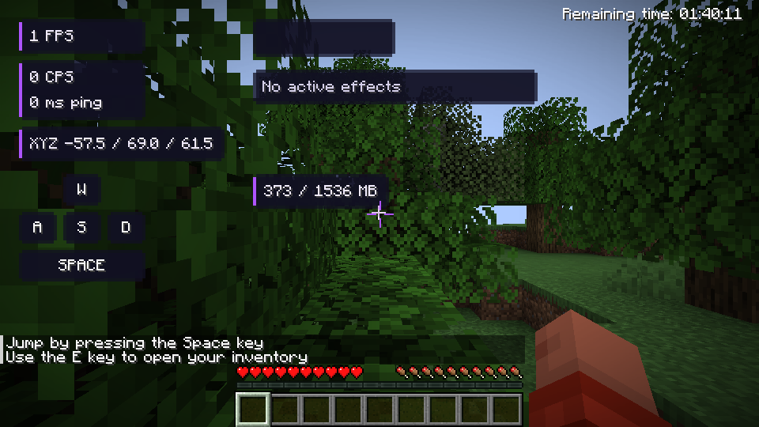
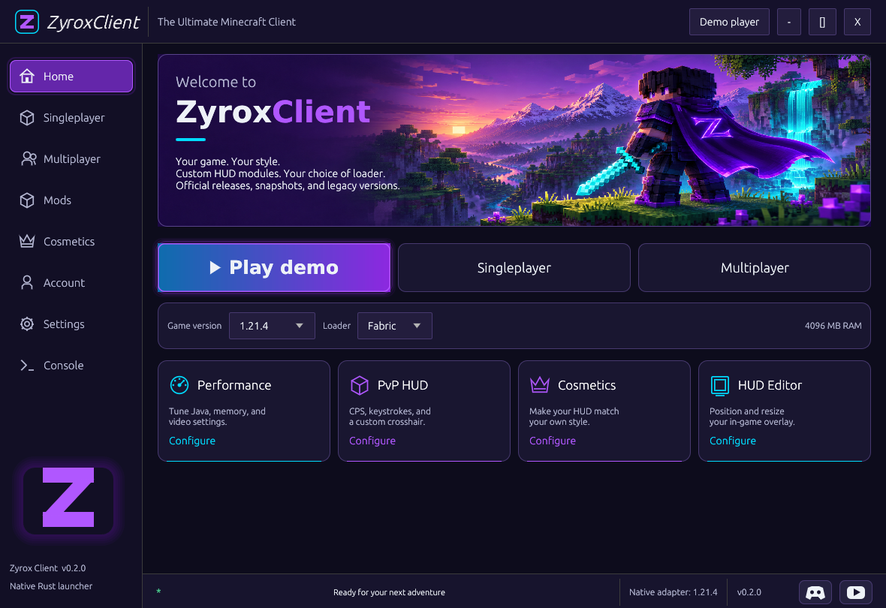
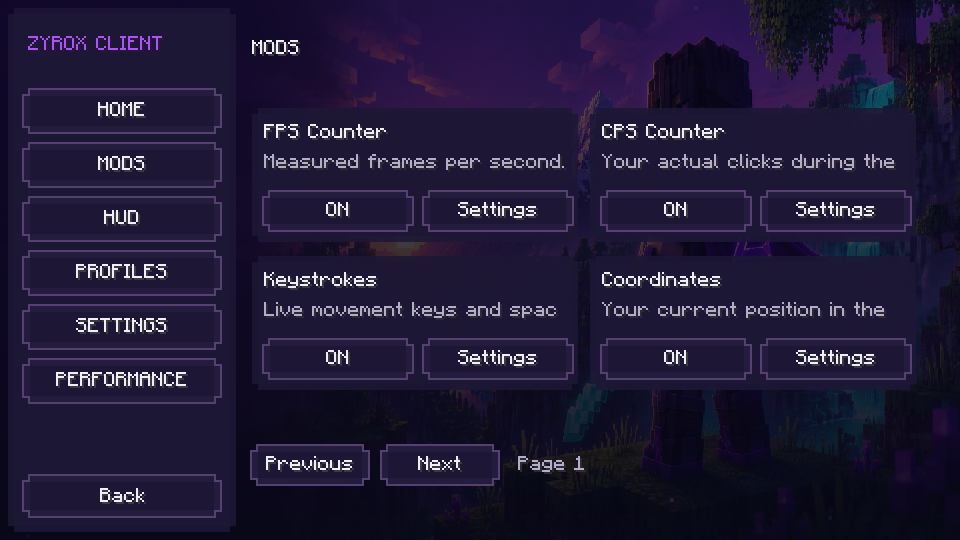

Move it. Scale it. Save it.
Drag HUD elements into place, tune their size and save your layout. Keep different setups with configurable profiles and themes.

Real demo-world capture · software-rendered testA fresh home for Minecraft Java.
One launcher. Your versions. A HUD that’s yours.
Free to downloadLinux + WindowsBuilt in Rust
THIS IS ZYROX
Build your setup around the way you play.
Personalize the details, then jump into your world.
ZYROXCLIENT / DESKTOP

Pick a Minecraft version, choose an available loader, set your RAM, and let the launcher prepare the game files and Java runtime.
Loader support depends on the selected version. The native Zyrox mod currently targets Fabric 1.21.4.
Drag HUD elements into place, tune their size and save your layout. Keep different setups with configurable profiles and themes.

Real demo-world capture · software-rendered testFPS, CPS, keystrokes, armor, potion effects, coordinates, crosshair, zoom and more. Open your module menu with Right Shift.

Native Minecraft GUI · 13 implemented modulesYOUR NEXT SESSION STARTS HERE
Direct downloads from our GitHub release.
No account is needed to download.
Portable · x86_64
Download the executable and open ZyroxClient. Use auto for Java to prepare the required runtime.
Download .exeUnsigned preview. GUI checked under Wine; physical Windows gameplay is untested.
Portable · x86_64
A single launcher file for your Linux desktop. Make it executable, then open it to get started.
Download AppImageBuilt and opened on Fedora 45. Desktop OpenGL drivers are required.
Sandboxed · x86_64
Install ZyroxClient with Flatpak and launch it from your desktop’s application menu.
Download FlatpakFreedesktop runtime downloaded separately. Installed and opened in its sandbox.
Manage accounts, browse versions, download verified client JARs and export profiles. This APK does not run Minecraft Java.
A FEW THINGS TO KNOW
Choose the desktop package for your operating system. The current downloads are a free public preview.
Microsoft sign-in currently needs your own approved client ID. You can also use Ely.by for supported community servers, or play the official demo.
Choose 1.21.4 + Fabric for the native Zyrox modules. Enter a world, press Right Shift, and set up your HUD.
The native Fabric 1.21.4 adapter, 13 modules, HUD editor and configuration system are implemented. Linux desktop packages have opened successfully; the Windows GUI was checked under Wine. The Android companion passed compilation, lint and signing checks, but has not been tested on a device.
Rendered capes, cosmetic synchronization, a proper 1.8.9 mod adapter, advanced performance features and a full Android game runtime are still in development.
Read the verification report →The launcher implements Microsoft device sign-in and checks the account’s Java Edition entitlement and profile. This preview requires your own approved public Microsoft application client ID in Settings. No shared client ID is bundled, and a real-account sign-in has not yet been verified.
Microsoft and Ely.by setup →Use your Ely.by account and optional two-factor code in the launcher’s Ely.by form. It uses Ely.by’s documented authentication API and a verified authlib-injector agent for compatible community servers. Microsoft-authenticated servers and Realms require Microsoft accounts.
Create or manage an Ely.by account →The launcher lists versions from Mojang’s official manifest, including snapshots and historical releases. Loader availability varies. The native Zyrox mod currently supports exactly Minecraft 1.21.4 with Fabric; it is not one universal mod JAR for every game version.
For AppImage, make the downloaded file executable. If FUSE is unavailable, run it with extraction enabled.
chmod +x ZyroxClient-0.2.0-x86_64.AppImage
./ZyroxClient-0.2.0-x86_64.AppImage
# Without FUSE:
APPIMAGE_EXTRACT_AND_RUN=1 ./ZyroxClient-0.2.0-x86_64.AppImageFor Flatpak:
flatpak install --user ./ZyroxClient-0.2.0-x86_64.flatpak
flatpak run dev.zyrox.clientNo. Zyrox Companion handles accounts, version metadata, verified JAR downloads and profile exports. Minecraft Java gameplay needs a separate Android runtime and graphics port, which this APK does not include.
BUILD THE NEXT CHAPTER WITH US
Share your setup, follow development and stay close to Zyrox.